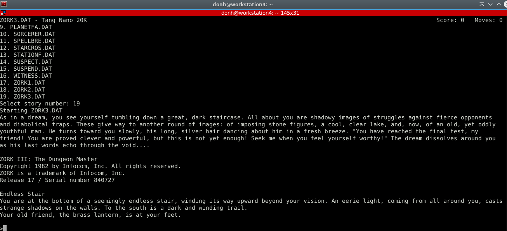
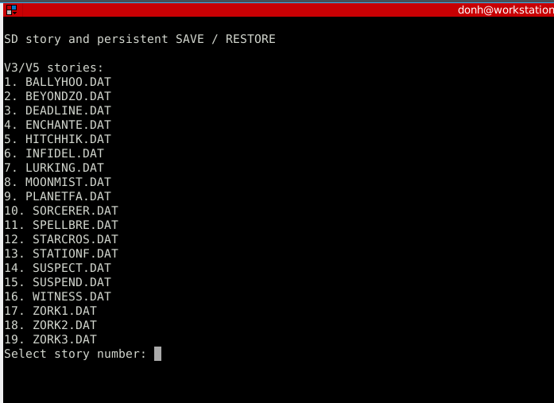

TANG NANO 20K · OPEN SOURCE
A tiny FPGA.
A world of adventure.
Zork and compatible Z-machine V3/V5 stories, running on the Sipeed Tang Nano 20K. A RISC-V processor inside the FPGA runs the game, with no operating system.
Includes the FPGA bitstream, matching BL616 Companion, Madman and Mars, 2049 AD. For Tang Nano 20K revision 3923. Supply your own Zork story files.

THE BUILD
The game lives
on the board.
A PicoRV32 RISC-V CPU runs a bare-metal Z-machine interpreter in FPGA hardware. Stories load from a FAT16/FAT32 microSD card into the board’s integrated SDRAM.
- Display
- 720p HDMI text output or a USB serial terminal.
- Input
- USB keyboard through the onboard BL616 and a powered hub, UTF-8 USB serial from your computer, or physical PS/2 through a 3.3 V-safe adapter. Matching Companion firmware enables automatic USB selection; Compose and Unicode hex entry are retained.
- Stories & saves
- Choose from up to 1,000 stories. Each story gets five save positions in a matching .sav file, created automatically on its first confirmed SAVE.
- Interpreter
- V3 and V5 support, Unicode game text and MORE paging. HDMI uses fallback glyphs for non-ASCII. Compatibility is bounded; see the README for tested editions and limits.
PICK YOUR NEXT ADVENTURE
Copy. Select. Play.
Place compatible .DAT, .Z3 or .Z5 files in the card’s /ZORK directory. Unicode filenames are supported. Reset the board, enter a story number, and step into its world.
V3 serial text adapts to the terminal size. V5 uses a fixed 79-column × 32-row screen and needs at least 80 columns and 32 usable game rows (33 terminal rows with Minicom’s status bar).
Read the play instructions ↗
YOUR TURN
Build your own text-adventure machine.
Get the build
Download the v0.8.0 FPGA bitstream and matching Companion installation bundle, plus stories, notices and checksums. The FPGA and BL616 are updated separately.
Prerelease downloads ↗Prepare your card
Supply compatible story files on a FAT16/FAT32 microSD card. Copy the stories into /ZORK. The first confirmed SAVE creates a matching .sav beside the story; no save-file setup is required.
Stories & automatic saves ↗Connect and explore
Follow the separate FPGA and Companion installation instructions. Connect a powered keyboard hub for USB input, or a PC for serial. The two-second flashing-LED window retains S1 manual overrides.
Input and startup guide ↗